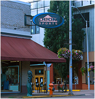
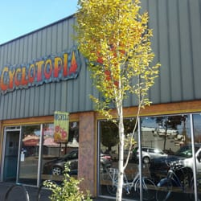
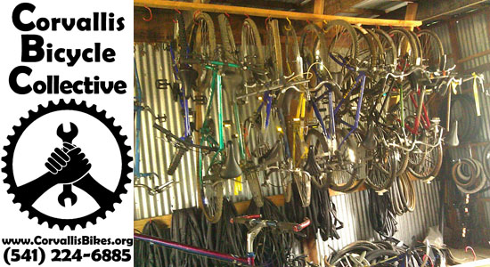
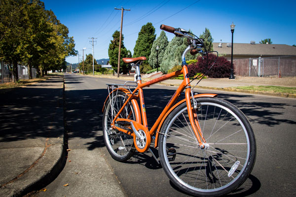
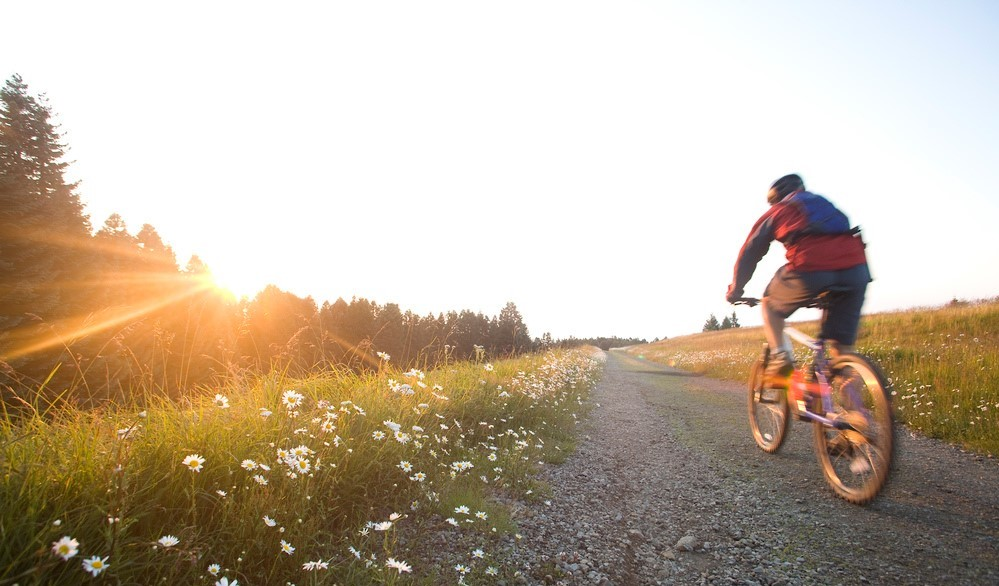

Your Local Biking Resources
For cycling enthusiasts residing in Corvallis, OR
Introduction
New to Corvallis? Love to Bike? You are in the right place! Here are some good resources for all things related to biking, from buying a new bike, where to get lights, or to get fixes and tune ups. Corvallis is also home to an extremely vibrant bicycling community!
Peak Sports Bicycle Shop

Peak Sports specializes in supplying high-quality bicycles which include road, mountain, triathlon, hybrid, fitness, BMX and children’s bikes. They also carry cycling clothing and accessories in top brands such as Trek, Specialized, Felt, Kink, Santa Cruz and Salsa. Peak Sports is there to help you find the perfect products for your needs. They also have all gear needed for any of Triathlon goers.
207 NW 2nd Street Corvallis, OR 97330
541.754.6444
Hours: Monday-Friday 10-6, Saturday 9-6, Sunday 11-5
To learn more click here.
Bike N Hike

Bike N Hike offers a wide selection of road, mountain, commuter, and children’s bikes. They allow for test rides and help you find the perfect fit for you. Additionally, they provide a free “30 day” tune-up and free adjustments on all bearings, brakes, and gears for the first year. Even if you did not purchase your bike there,they provide great maintenance and bike repair services. They also offer other accessories such as helmets, locks, and lights.
401 SW 3rd Avenue Corvallis, OR 97333
541.753.2912
Hours: Monday - Saturday 9am - 6pm, Sunday 12 – 5
to learn more click here.
Cyclotopia
Cyclotopia provides bike sales for many brands and types, as well as full service bicycle repair. They also have basic bike supplies and accessories, and they also will make special orders. Cyclotopia is also involved in many community services and host community cycling events.
435 SW 2nd Street Corvallis, Oregon 97333
541.757.9694
Hours: Monday-Friday 10-6, Saturday 10-6, Sunday 12-5
To learn more click here.
Corvallis Bicycle Collective

Corvallis Bike Collective is a used bike shop and repair shop which also provides classes and other community activities. They sell used and new parts, tools, and accessory as well as a selection of used bicycles. Some bicycles are "ready to ride," while others still need a little work. They also promote access to bicycles and support for cycling as a way of life, for example they have an Ask-A-Wrench booth at the Corvallis Farmer's Market.
707 NW 11th St. Corvallis, OR 97333
541.224.6885
Hours: Monday-Wednesday 12-4, Thursday-Sunday 12-6
To learn more click here.
Dixon Rec Center
Are you a student at Oregon State Univeristy? The OSU Dixon Rec center has some great cycling resources. They provide some basic maintenance and tune up, such as flat tire repair, brake adjustments, gear adjustments and wheel truing. They also provide bike and gear rentals at low process for students.
211 Dixon Recreation Center, Oregon State University, Corvallis, OR 97333
541.737.3748
To learn more click here.
More Resources
Learn more about Corvallis and its biking programs at the City of Corvallis webpage.